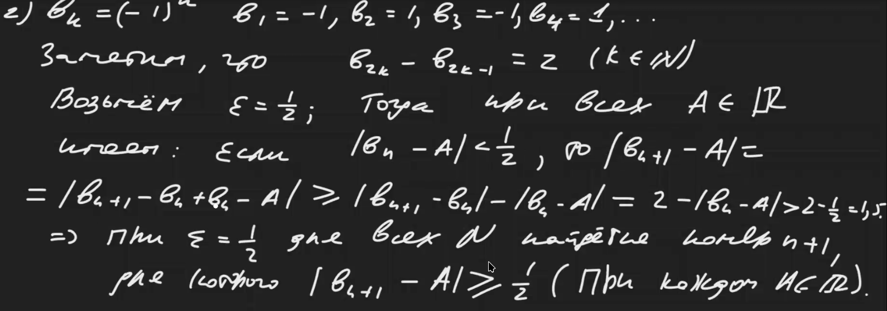

Table of Contents
Предел последовательности
\(\lim a_{n} = A \Leftrightarrow \forall \varepsilon > 0 \exists N \colon \forall n > N\;\;|a_{n} - A| < \varepsilon\)
Число не будет пределом, если можно найти интервал вокруг этого числа, вне которого будет лежать бесконечно много элементов последовательности.
Примеры
- Доказать, что \(\lim\dfrac{1}{n} = 0\)
Указание: Надо взять \(n \geqslant \left[\dfrac{1}{\varepsilon}\right] + 1\)
- \(b_{n} = (-1)^{n}\)
Доказательство, что предела нет (в доказательстве пригодится неравенство треугольника):

Единственность предела
Если у последовательности есть предел, то он единственен.
Ограниченная последовательность
- Все элементы последовательности лежат в пределах отрезка.
- Если последовательность имеет предел, то она ограничена.
Лемма об отделимости
Какая-то слишком тривиальная, не понял зачем она.
Арифметика пределов theorem
Пусть \(\lim_{x \to \infty} a_{n} = A \quad \text{и} \quad \lim_{x \to \infty} b_{n} = B\), тогда:
- \(\lim_{x \to \infty} [\alpha a_{n} + \beta b_{n}] = \alpha A + \beta B\)
- Предел произведения – произведение пределов.
- Предел частного – частное пределов.